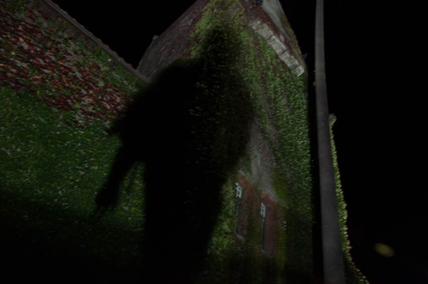

Time
Massive
Photography, Photoshop
720x540
In these photos, I wanted to play with the feeling of being overwhelmed by something. There are two subjects in this photo that are massive, one being the building and the other being the shadow. Even the angle of the shot makes the viewer seem inferior. At the time that these photos were taken, I was overwhelmed with projects, essays, work, and my social life. the massiveness of the building is meant to represent the amount of stress that I was going through, and the shadow is meant to represent me. The shadow can technically represent anyone, because as a shadow figure, there is no face or identity to it, and it can also represent the past, in a sense that a shadow is mostly behind you.